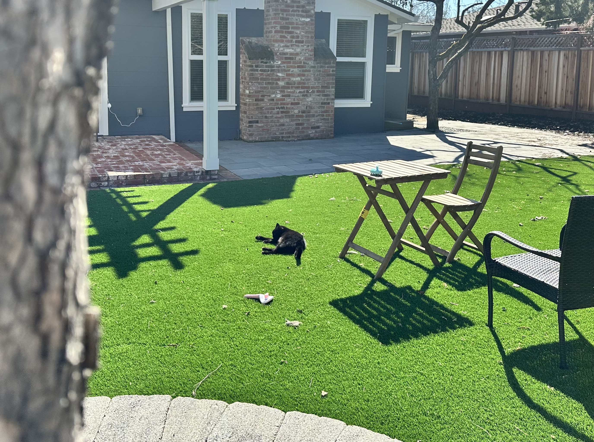
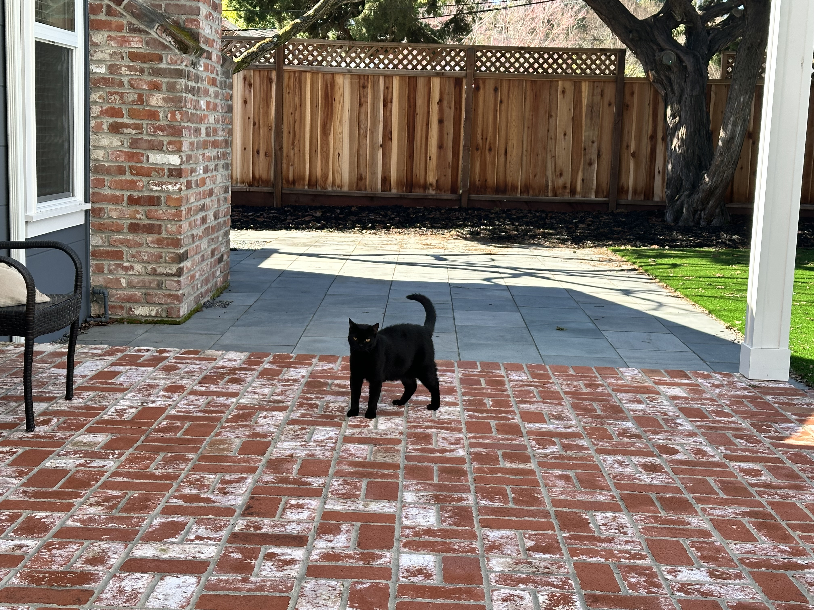

Homepage
Welsome to the Chicken Resource Hub!
Wonah is a Middle School student who enjoys coding, math, sports, and spending time outdoors with her pets. She has a cat named Twizzler two chickens named Cloud and Brook. She owns a persimmon tree in her backyard from which she enjoys picking the tastiest persimmons from. She also enjoys spending time with family and friends. She is deeply opposed to animal cruelty, as well as the ill treatment of any organism. Wonah invites you to explore her first chicken website and foster your love in the environment as well as all living things.
 

Here's some basic information you might want to know:
Basic Chicken Infromation: The chicken (gallus gallus domesticus) is a large, roundish short-winged bird domesticated from the red junglefowl of Southeast Asia around 8000 years ago. Chickens are mainly raised for food like meat and eggs, while others are kept as pets or even cockfighting. They are common and widespread domestic animals with a total population of over 25 billion as of 2023, with an annual production of over 50 billion birds. A hen bred for laying can produce over 300 eggs per year. Chickens are also a part of various cultures, with refrences in folklore, religion, and literature.
Introduction to Chicken Breeds: The breed of chicken is important to your living space and your environment. It is important to get the appropriate chicken when buying your new feathered friends. Each chicken is either a heritage breed or a hybrid. Some hybrids, if any of them lay fertilized eggs, will not give you more chickens of the same breed. Heritage breeds must be from a parent and grandparent stock of breeds recognized by the American Poultry Association (APA) prior to the mid-20th century. I personally like both heritage and hybrid breeds due to each chicken breed's unique features and more. Also, chickens are split into two groups based on meat and egg laying birds. As their names suggest, meat birds are birds killed for their meat and therefore have been bred to be larger to hold more meat. Egg laying chickens are chicken breeds who have been bred for optimal egg laying, whether it be egg laying consistancy, egg color, or for the duration of a hen's laying career.
Sour Crop in Chickens: The crop is a sac-shaped organ located just above the breast but below the neckline. Sour crop is a fungal infection of the crop. It occurs when the food in the crop begins to ferment. This is the result of a pH imbalance and how this imbalance affects the natural bacteria in a chicken’s crop. Sour crop is usually an individual case ailment. This means that it often only affects a single chicken. However, if a common trigger is consumed by the whole flock, you may have several cases of sour crop on your hands. For example, if your whole flock forages on long grasses or consumes moldy feed, they are all prone to getting sour crop. As a quick review, an altered crop pH level is what allows bad bacteria, or fungus, to proliferate. There are several triggers that can lead to crop issues in backyard chickens. Many of these triggers not only lead to sour crop, but can also lead to crop impaction. Keep in mind that sour crop and impacted crop can be interrelated, with one condition leading to the other. The easiest way to diagnose sour crop is to see if the crop is emptying properly. Chickens generally stock up on food throughout the day, then the food slowly gets released from the crop and digested throughout the night. If you suspect a sour crop issue, do a crop-fullness test. You can do this test for an individual chicken by quarantining it or for your whole flock. Start by taking away the food and water source in the evening. In the morning, feel the crop to see if it feels empty or full. An empty crop will feel small, flat, and hard. A full crop will be easy to feel and will be squishy and soft. A fully impacted crop will feel large and hard. A full crop or a hard impacted crop in the morning means your chicken has a crop problem. When checking for sour crop, a full squishy crop accompanied by sour-smelling breath is a sure sign of sour crop. You may also hear gurgling noises coming from the hen’s crop, which is from the fermentation process. This is how to treat Sour Crop: First, quarantine the hen. Remember to give it a safe, comfortable pen away from the flock. The chicken should not be provided with food and water at this time. The crop is already full and hurridly fermenting its contents. You should also massage the chicken's crop 3-4 times a day from throat to breast. Also, you should moniter the progress so you know if you nees to contact a vet. Finally, when the chicken makes a recovery with a smaller and less squishy crop, give the hen fresh drinking wate, but wait at least 12 more hours before giving it tiny bits of easy-to-digest food.
Mite Infestation in Chickens: Chicken mites are a common issue for backyard chicken keepers, and understanding their types, treatment, and prevention is essential for maintaining a healthy flock. Mites are small parasites that can live on chickens or in their environment, spreading quickly through direct contact or from wild birds. The most common types include northern fowl mites, red mites, and scaly leg mites, each with unique characteristics and preferences. Northern fowl mites thrive in cooler climates, while red mites prefer warmth and humidity. Scaly leg mites burrow under the scales of chickens' feet and legs, causing discomfort and potential damage. Regular health checks and monitoring for symptoms, such as decreased egg production, raised leg scales, or visible parasites, can help identify infestations early. Effective treatment of chicken mites often involves a combination of natural and chemical approaches. Options include diatomaceous earth, garlic juice sprays, and more potent treatments like permethrin or Spinosad, which target both live mites and their eggs. Scaly leg mites require a specific treatment process, including washing and oiling the legs and applying mite sprays. The environment must also be treated thoroughly to prevent reinfestation, as mites can survive off hosts for weeks. Coop cleaning, litter replacement, and applying mite treatments to roosts and crevices are critical steps to eliminate parasites. For severe infestations, chemical treatments may need reapplication to address newly hatched mites. Preventing mite infestations is key to keeping chickens healthy and stress-free. Providing dust baths, securing coops from wild birds and rodents, and applying preventive sprays can reduce the risk of exposure. Quarantining new birds and performing regular health checks are also vital measures. While mites may bite humans, they cannot survive on them, making the main concern their impact on the flock. By maintaining proper preventive practices and being vigilant about potential signs of infestation, chicken keepers can ensure their flock remains productive and comfortable.